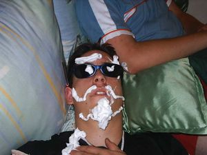

Dormir
 De: La Frikipedia, la enciclopedia extremadamente seria.
De: La Frikipedia, la enciclopedia extremadamente seria.
Estado durante el cual el sujeto descansa.
El deporte favorito del humano que nunca es practicado cuando se debería practicar. O sea en fines de semana y viernes (claro que es cuando uno se va a pachangas). Y casi siempre es practicado entre semana (por si no sabes, me refiero a lunes, martes, miércoles, jueves y viernes. pero en este caso solo de lunes a jueves)el mayor tiempo posible (cuando en realidad deberías de estar haciendo tareas).
Dormir es un complejo proceso que transcurre en etapas.
La primera tiene que ver con un acto volitivo (pero lamentablemente muchas veces involuntario) de dejar el estado de vigilia y control por un período variable dependiente del grado de enajenación o alienación del que goce o padezca el sujeto. El sujeto se decide a ir a dormir cuando ya no puede más aguantarse sentado o de pie, superado por el cansancio. Dependiendo del grado de alienación del que padezca, demorará más o menos tiempo en dejar de pensar y entregarse a sí mismo a la evasión que comporta dormir.
Si logra dormir, el sujeto experimenta un apego completo a la superficie que lo aloje, sea ésta una cama, un sofá, o la superficie de su escritorio de trabajo. En ese estado, puede soñar alcanzada la etapa REM, así nominada en función de lo que algún observador externo puede apreciar en el bultito móvil que aparece bajo los párpados del durmiente. Cuando sueña, el sujeto ya no es dueño de sí, y vivencia en los más íntimo de sí, el complejo y oscuro mundo interior las fantasías más reprimidas. Con suerte, transcurridas las horas de sueño, el sujeto despertará, y se enfrentará nuevamente a la realidad que es él mismo y lo que le rodea. Este es el sueño del sujeto implicado.
Dormirse en una fiesta
 Ejemplo de sueño como una roca
El principal peligro de celebrar fiestas en una casa, es la existencia de cómodos y blandos sofás. Con tan sólo recostarte en los mismos, puedes terminar sumido en un profundo sueño. Si corres la desgracia de no haber sido el último en sobarte, puedes ser la víctima insensata de tus compañeros de fiesta. Entonces pueden hacerte miles de putadas que además serán grabadas o fotografiadas. Como por ejemplo:
- Llenarte la cara de espuma de afeitar (véase la foto adjunta).
- Hacerte trencitas todo el pelo.
- Hacerte rastas en todo el pelo.
- Cortarte el pelo.
- Intento de asesinato poniéndote un cojín en la cara.
- El típico cigarro encendido en la boca que te irás fumando hasta el filtro.
- Pintarte la cara.
- Meterte caquita en la boca.
- Afeitarte las cejas.
- Ponerte en una posicion vergonzosa y humillante.
- Meter tu mano en Hagua tibia para ke te mees.
- Darte con el pene en la cara (mientras sueñas que solo es una salchicha de frankfurt)
- Dejarte en bolas en tu azotea
- Mojarte
- Mearte
- Sodomizarte
- Disfrazarte de rollito de shushi con una manta
- Llevarte a Cuba (coño, así da gusto dormirse)
- Tirarte a la piscina
- Empaquetarte para regalo
- Regalarte
- Mandarte por correo
- Aereo
- Y sin pasaporte (para que te jodas mas)
- Y simplemente todo lo que pase por la mente de uno de tus cafres colegas
Dormirse en clase
Ciertamente, todos hemos deseado alguna vez dormirnos en clase, aunque las sillas sean más incomodas que un pedo de ascensor. Sin embargo, si te pasaste la noche en vela, es común ir cerrando los ojos, a pesar del peligro que esto supone. Cuando te quedas dormido, puede pasar esto:
- Que te pinten TODA la cara
- Que te pongan virutas en el pelo
- Que se echen a reir
- Que te sodomicen con un lápiz (si, es posible)
- Que el lapiz te lo metan en la oreja
- Que te metan papel en todos los orificios disponibles
- Que el profesor te vea, entonces pueden pasar cosas:
*Que te mande al despacho del director
*Que te eche una bronca de campeonato (de la que no te enterarás al estar medio dormido)
*Que te despierte con un libro
- Que se lo digan al profesor (vease apartados de la opción anterior)
- Que sean buena gente y te despierten
- Que no te despierten hasta el final de la clase y te quedes con cara de tonto preguntando por los deberes
Dormir y... soñar
Cuando dormimos, el ser humano tiende a expresar sus deseos y fantasías más ocultas o simplemente...aparecen las extravagancias y estupideces que menos se espera uno... Soñar es algo habitual y existen diversos tipos de sueños a continuación se detallan algunos de ellos:
Tipos de sueños

Muchos estudios científicos dicen que
Yamcha nunca ha dormido.
- Negro: No se sueña nada o el paciente es demasiado vago para recordarlo.
- Erótico: Cuando se amanece... ¿Un tanto mojado? Hay veces en el que el paciente no necesita darse una ducha de lo empapado que se encuentra.
- Volador: El sujeto es un extraño ser que tiene la capacidad de volar a cualquier sitio que desee. A veces tiene alas, otras se transforma en un ser extraño y otras simplemente vuela porque sí. Es muy útil si en sueños se quiere visitar varios lugares a la vez.
- Teletransportación: El sujeto puede usar la teletresportacion colocando los dedos indice y medio en la frente (producto de viciarse mirando dragon ball) y teletransportarse a otro lugar, esto es usado comunmete para salir de situaciones peligrosas que se den en un sueño...
- Familiar: El paciente sueña con miembros de su familia.. Realiza actos sexuales, culturales, artísticos ect..
- Desesperado: aquellos sueños en los que uno se despierta sudando y con el corazón agitado. Existen dos tipos:
- Malévolos:En muchos de ellos se intenta correr pero es imposible. En otros, el paciente grita pero nadie le oye o su garganta no es capaz de emitir sonido alguno.
- Benevolentes: Son aquellos sueños que el paciente desea desesperadamente: que no acaben. Cuando se despierta soñoza en su almohada para poder besar al chico/a de sus sueños (nunca mejor dicho) o poder vivir y/o sentir alguna otra cosa sentimental, amorosa, sexual o placentera.
- el como una roca:ese que te pueden poner pasta de dientes en la cara,en los huevos,tatuarte soy necrozoofilico en la nuca,depilarte el ano,sodomizarte y seguir durmiendo como si nada.
- El todopoderoso: Sueñas que estás soñando que controlas tu propio sueño; sólo sucede una vez en la vida pero merece la pena.
- Lamentable: Te despiertas porque tienes mucho frío, miras la ventana y ves que está abierta (además de darte cuenta de que estás sólo en casa). No sólo abres la ventana para joderte de frío sino que también te has cargado algo de tu habitación.
Estudios recientes en la universidad católica de San-Bernardo en las antiyas holandesas, se han acercado a demostrado que aparentemente el sueño es la única realidad existente. Pero no ha sido comprobado al cien por cien -to porque durante la investigación uno de los científico comenzó a roncar y los demás despertaron.
Autor(es):
- Darz Mol
- Haakjvork
- Aque
- Del Pino
- Nadaquever
- Frikih
- Telasampo
- Patadaenelcraneo
- Cyberpla
- Karlinx
Frikipedia 2005-2016, Licencia
GFDL 1.2 - Extraído por FrikiLeaks